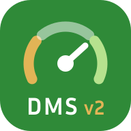

Tidak ada sinyal
DMS v2 butuh koneksi untuk memuat halaman ini.
Isian yang sudah Anda ketik di halaman Input tetap tersimpan di perangkat ini dan bisa dikirim saat sinyal kembali.

DMS v2 butuh koneksi untuk memuat halaman ini.
Isian yang sudah Anda ketik di halaman Input tetap tersimpan di perangkat ini dan bisa dikirim saat sinyal kembali.